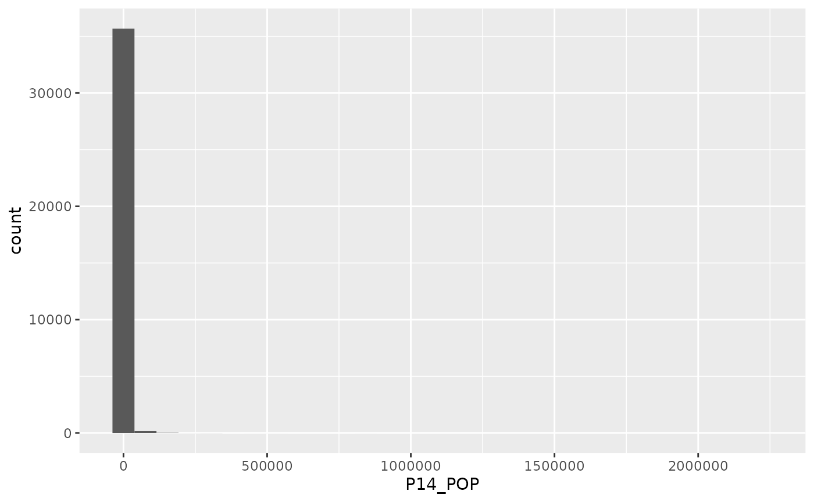
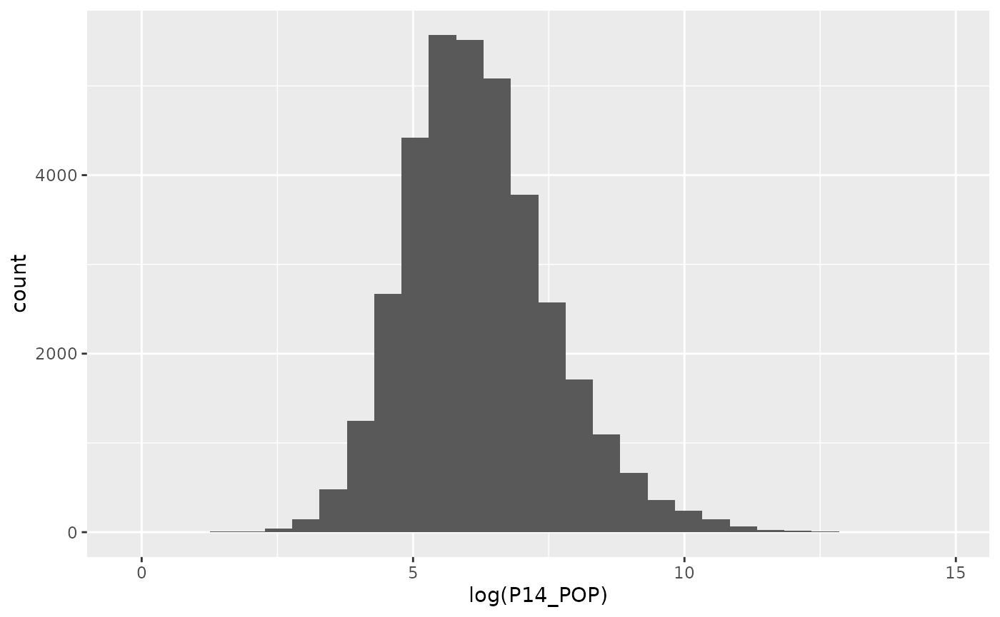
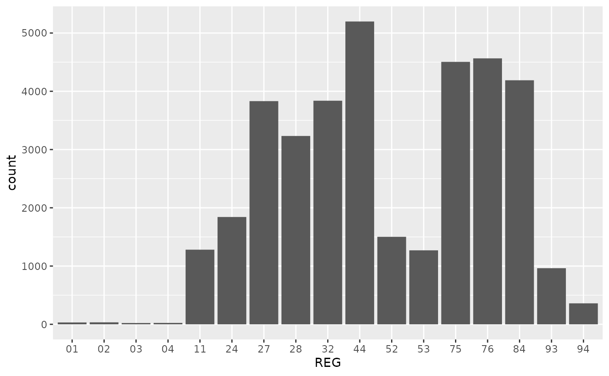
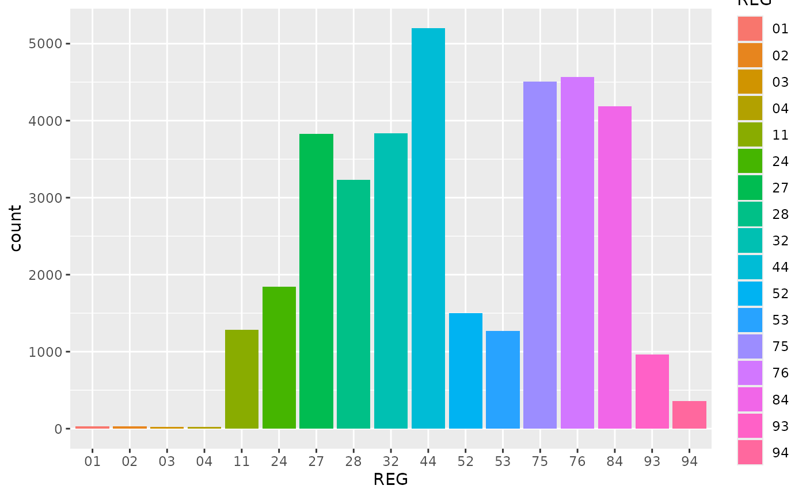
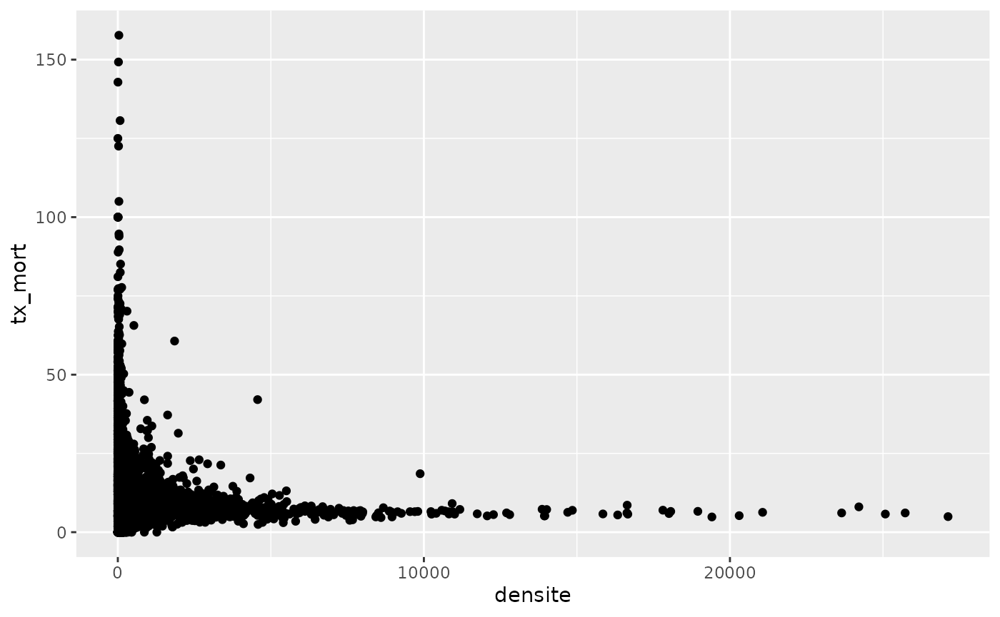
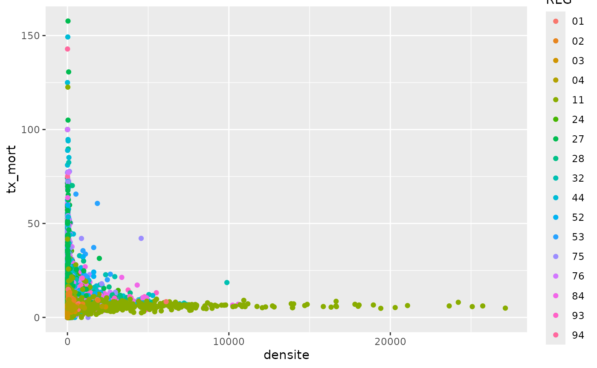

vignettes/m01_exercices_module_introduction_a_R.Rmd
m01_exercices_module_introduction_a_R.Rmda <- 5 et
b <- 4a+b et a*b.c <- a + 3 * bls().a en lui donnant la
valeur 10. Vérifiez votre ré-assignation dans la panneau
Environement.t <- 'texte' (vous pouvez également utiliser les doubles
quotes comme “texte” mais ne les mélangez pas).a et t
avec la fonction paste(a, t). Que constatez-vous ?paste(),
pensez à utiliser l’aide de R avec help(paste).A <- 15 et
B <- 12. Que voyez-vous dans la panneau
Environement ?rm() (utilisez l’aide de R pour avoir plus de
renseignements sur la fonction rm).Résultat attendu :
#> [1] 5
#> [1] 4
#> [1] 9
#> [1] 20
#> [1] 17
#> [1] "a" "b" "c"
#> [1] 17
#> [1] "texte"
#> [1] "10 texte"Nous travaillons sur des indicateurs au territoire : “extdata/Base_synth_territoires.csv”, extraits de l’outil GEOIDD du ministère et exportés en csv.
Utiliser la fonction read.csv() pour importer ce
fichier et le stocker dans un objet df.
Veillez à ce que la région soit bien importée comme un facteur et non un entier.
Inspecter le dataframe avec les fonctions vues auparavant.
Résultat attendu :
#> 'data.frame': 36689 obs. of 38 variables:
#> $ CODGEO : chr "01001" "01002" "01004" "01005" ...
#> $ LIBGEO : chr "L'Abergement-Clémenciat" "L'Abergement-de-Varey" "Ambérieu-en-Bugey" "Ambérieux-en-Dombes" ...
#> $ REG : Factor w/ 17 levels "01","02","03",..: 15 15 15 15 15 15 15 15 15 15 ...
#> $ DEP : Factor w/ 100 levels "01","02","03",..: 1 1 1 1 1 1 1 1 1 1 ...
#> $ ZAU : Factor w/ 9 levels "111 - Grand pôle (plus de 10 000 emplois)",..: 3 2 2 2 8 2 2 5 8 2 ...
#> $ ZE : Factor w/ 321 levels "0050 - Mont-de-Marsan",..: 260 248 248 260 263 248 248 263 266 250 ...
#> $ P14_POP : int 767 239 14022 1627 109 2570 743 338 1142 397 ...
#> $ P09_POP : int 787 207 13350 1592 120 2328 660 336 960 352 ...
#> $ SUPERF : num 15.95 9.15 24.6 15.92 5.88 ...
#> $ NAIS0914 : int 40 16 1051 117 8 175 59 12 56 25 ...
#> $ DECE0914 : int 25 7 551 41 3 78 20 11 32 10 ...
#> $ P14_MEN : num 306 99.3 6161.1 621.1 52.5 ...
#> $ NAISD15 : int 13 5 222 15 2 21 11 2 18 4 ...
#> $ DECESD15 : int 5 1 121 7 2 9 3 3 5 0 ...
#> $ P14_LOG : num 342.7 161.2 6838.4 661.8 71.5 ...
#> $ P14_RP : num 306 99.3 6161.1 621.1 52.5 ...
#> $ P14_RSECOCC : num 14 47.3 121.6 10.9 10.9 ...
#> $ P14_LOGVAC : num 22.74 14.55 555.64 29.85 8.14 ...
#> $ P14_RP_PROP : num 260 84.6 2769 473.3 37.7 ...
#> $ NBMENFISC13 : int 297 99 6034 617 47 1014 299 140 431 137 ...
#> $ PIMP13 : num NA NA 57.4 NA NA ...
#> $ MED13 : num 22130 23213 19554 22388 21872 ...
#> $ TP6013 : num NA NA 15.1 NA NA ...
#> $ P14_EMPLT : num 85.16 12.81 7452.93 280.57 5.95 ...
#> $ P14_EMPLT_SAL: num 52.19 4.95 6743.37 206.38 3.96 ...
#> $ P09_EMPLT : num 65.57 17.64 7551.68 286.61 5.29 ...
#> $ P14_POP1564 : num 463 141.6 8962.8 1043.1 71.3 ...
#> $ P14_CHOM1564 : num 33 9.84 1059.73 66.33 7.93 ...
#> $ P14_ACT1564 : num 376 121 6681.9 842.1 57.5 ...
#> $ ETTOT14 : int 47 22 1316 141 7 203 66 39 54 36 ...
#> $ ETAZ14 : int 9 1 7 14 0 21 2 5 5 6 ...
#> $ ETBE14 : int 2 3 60 7 0 18 0 2 6 4 ...
#> $ ETFZ14 : int 5 1 131 19 0 21 9 1 13 3 ...
#> $ ETGU14 : int 25 14 892 85 5 114 45 27 24 18 ...
#> $ ETGZ14 : int 6 4 283 19 1 28 16 6 9 7 ...
#> $ ETOQ14 : int 6 3 226 16 2 29 10 4 6 5 ...
#> $ ETTEF114 : int 9 2 385 27 0 38 17 6 9 7 ...
#> $ ETTEFP1014 : int 0 0 109 5 0 15 2 0 3 0 ...
#> CODGEO LIBGEO REG DEP
#> 1 01001 L'Abergement-Clémenciat 84 01
#> 2 01002 L'Abergement-de-Varey 84 01
#> 3 01004 Ambérieu-en-Bugey 84 01
#> 4 01005 Ambérieux-en-Dombes 84 01
#> 5 01006 Ambléon 84 01
#> 6 01007 Ambronay 84 01
#> ZAU ZE
#> 1 120 - Multipolarisée des grandes aires urbaines 8213 - Villefranche-sur-Saône
#> 2 112 - Couronne d'un grand pôle 8201 - Ambérieu-en-Bugey
#> 3 112 - Couronne d'un grand pôle 8201 - Ambérieu-en-Bugey
#> 4 112 - Couronne d'un grand pôle 8213 - Villefranche-sur-Saône
#> 5 300 - Autre commune multipolarisée 8216 - Chambéry
#> 6 112 - Couronne d'un grand pôle 8201 - Ambérieu-en-Bugey
#> P14_POP P09_POP SUPERF NAIS0914 DECE0914 P14_MEN NAISD15 DECESD15
#> 1 767 787 15.95 40 25 306.00000 13 5
#> 2 239 207 9.15 16 7 99.33745 5 1
#> 3 14022 13350 24.60 1051 551 6161.06200 222 121
#> 4 1627 1592 15.92 117 41 621.05374 15 7
#> 5 109 120 5.88 8 3 52.51818 2 2
#> 6 2570 2328 33.55 175 78 1028.00000 21 9
#> P14_LOG P14_RP P14_RSECOCC P14_LOGVAC P14_RP_PROP NBMENFISC13 PIMP13
#> 1 342.73473 306.00000 13.99418 22.740550 260.00000 297 NA
#> 2 161.16023 99.33745 47.27625 14.546538 84.58436 99 NA
#> 3 6838.35437 6161.06200 121.64795 555.644416 2769.00170 6034 57.41294
#> 4 661.76017 621.05374 10.85505 29.851387 473.32736 617 NA
#> 5 71.51818 52.51818 10.85714 8.142857 37.65455 47 NA
#> 6 1160.00000 1028.00000 56.00000 76.000000 779.00000 1014 62.35178
#> MED13 TP6013 P14_EMPLT P14_EMPLT_SAL P09_EMPLT P14_POP1564
#> 1 22130.00 NA 85.157286 52.191539 65.566193 463.00000
#> 2 23213.00 NA 12.814642 4.946329 17.644456 141.62963
#> 3 19554.00 15.11508 7452.926728 6743.374287 7551.682296 8962.84216
#> 4 22387.62 NA 280.569953 206.382233 286.611037 1043.12909
#> 5 21871.67 NA 5.945455 3.963636 5.285714 71.34545
#> 6 21650.67 NA 487.730918 372.758450 491.138876 1614.00000
#> P14_CHOM1564 P14_ACT1564 ETTOT14 ETAZ14 ETBE14 ETFZ14 ETGU14 ETGZ14 ETOQ14
#> 1 33.000000 376.00000 47 9 2 5 25 6 6
#> 2 9.835391 120.97531 22 1 3 1 14 4 3
#> 3 1059.728437 6681.86216 1316 7 60 131 892 283 226
#> 4 66.326127 842.14083 141 14 7 19 85 19 16
#> 5 7.927273 57.47273 7 0 0 0 5 1 2
#> 6 108.000000 1267.00000 203 21 18 21 114 28 29
#> ETTEF114 ETTEFP1014
#> 1 9 0
#> 2 2 0
#> 3 385 109
#> 4 27 5
#> 5 0 0
#> 6 38 15
#> CODGEO LIBGEO REG DEP
#> 36684 97419 Sainte-Rose 04 974
#> 36685 97420 Sainte-Suzanne 04 974
#> 36686 97421 Salazie 04 974
#> 36687 97422 Le Tampon 04 974
#> 36688 97423 Les Trois-Bassins 04 974
#> 36689 97424 Cilaos 04 974
#> ZAU ZE P14_POP
#> 36684 400 - Commune isolée hors influence des pôles 0401 - L'Est 6722
#> 36685 112 - Couronne d'un grand pôle 0402 - Le Nord 22406
#> 36686 400 - Commune isolée hors influence des pôles 0401 - L'Est 7132
#> 36687 111 - Grand pôle (plus de 10 000 emplois) 0404 - Le Sud 76796
#> 36688 112 - Couronne d'un grand pôle 0403 - L'Ouest 7198
#> 36689 400 - Commune isolée hors influence des pôles 0404 - Le Sud 5295
#> P09_POP SUPERF NAIS0914 DECE0914 P14_MEN NAISD15 DECESD15 P14_LOG
#> 36684 6822 177.60 519 186 2322.000 94 43 2542.478
#> 36685 22437 57.84 1963 508 7686.912 358 100 8328.616
#> 36686 7406 103.82 661 235 2420.000 111 46 2987.000
#> 36687 72658 165.43 6663 2004 29662.460 1339 420 32710.091
#> 36688 7057 42.58 531 217 2484.887 104 54 2890.404
#> 36689 5989 84.40 430 186 2016.000 87 38 2732.690
#> P14_RP P14_RSECOCC P14_LOGVAC P14_RP_PROP NBMENFISC13 PIMP13 MED13
#> 36684 2322.000 28.58054 191.8979 1799.954 NA NA NA
#> 36685 7686.912 50.94097 590.7629 4450.648 NA NA NA
#> 36686 2420.000 174.00000 393.0000 1849.000 NA NA NA
#> 36687 29662.460 1004.31703 2043.3140 15372.921 NA NA NA
#> 36688 2484.887 67.58626 337.9313 1773.765 NA NA NA
#> 36689 2016.000 239.56501 477.1253 1522.480 NA NA NA
#> TP6013 P14_EMPLT P14_EMPLT_SAL P09_EMPLT P14_POP1564 P14_CHOM1564
#> 36684 NA 1272.841 920.0617 1269.573 4306.217 1250.516
#> 36685 NA 4296.362 3618.1538 4185.015 14821.042 3712.486
#> 36686 NA 1519.306 1090.0856 1533.305 4650.000 1369.000
#> 36687 NA 16145.620 12486.5465 14807.249 50316.640 12783.137
#> 36688 NA 1273.858 994.3469 1202.079 4850.570 1360.617
#> 36689 NA 1194.383 993.1546 1314.121 3461.457 1122.361
#> P14_ACT1564 ETTOT14 ETAZ14 ETBE14 ETFZ14 ETGU14 ETGZ14 ETOQ14 ETTEF114
#> 36684 2850.155 414 125 44 31 159 59 55 82
#> 36685 10456.196 1323 136 139 190 694 249 164 267
#> 36686 3108.000 490 148 29 43 214 73 56 95
#> 36687 34446.789 5476 565 398 665 3025 999 823 1032
#> 36688 3524.287 456 42 39 61 223 76 91 59
#> 36689 2415.666 360 49 17 35 193 49 66 65
#> ETTEFP1014
#> 36684 8
#> 36685 66
#> 36686 11
#> 36687 204
#> 36688 20
#> 36689 26
#> [1] "CODGEO" "LIBGEO" "REG" "DEP"
#> [5] "ZAU" "ZE" "P14_POP" "P09_POP"
#> [9] "SUPERF" "NAIS0914" "DECE0914" "P14_MEN"
#> [13] "NAISD15" "DECESD15" "P14_LOG" "P14_RP"
#> [17] "P14_RSECOCC" "P14_LOGVAC" "P14_RP_PROP" "NBMENFISC13"
#> [21] "PIMP13" "MED13" "TP6013" "P14_EMPLT"
#> [25] "P14_EMPLT_SAL" "P09_EMPLT" "P14_POP1564" "P14_CHOM1564"
#> [29] "P14_ACT1564" "ETTOT14" "ETAZ14" "ETBE14"
#> [33] "ETFZ14" "ETGU14" "ETGZ14" "ETOQ14"
#> [37] "ETTEF114" "ETTEFP1014"
#> [1] "data.frame"
#> [1] "list"Nous travaillons toujours sur la même table des indicateurs au territoire, “extdata/Base_synth_territoires.csv”.
A- En utilisant la fonction mutate(), créer une nouvelle
variable correspondant à la densité de population (rapport de la
population P14_POP à la superficie de la commune
SUPERF), ainsi que les taux de natalité et de mortalité (en
pour mille)
B- A l’aide de la fonction select(), créer une nouvelle
table en ne conservant que le code commune, le type de commune (ZAU), la
région, le département et les variables que vous venez de créer.
C-Enfin, ne conserver les communes correspondant à votre département de naissance et stocker ce dataframe. Attention au type de la variable département !
D- Avec les opérateurs logiques, faire des essais pour sélectionner des échantillons différents.
Résultat attendu :
Nous continuons de travailler sur les indicateurs au territoire
df avec les variables que nous avons calculées à l’exercice
3.
1- Utilisez la fonction summary() pour obtenir un résumé
de l’ensemble des variables de la table df
2- Calculez maintenant les moyenne, médiane, écart-type et variance de
la variable de densité de population. Que constatez-vous ?
3- Utilisez le paramètre na.rm = T pour gérer les valeurs
manquantes
4- Calculez à présent les quartiles puis déciles de cette variable
5- Optionnel : calculez la version centrée réduite de la variable de
densité Rappel
sur la définition de centrer réduire. Avantage des variables
centrées réduites : on élimine les effets d’unité (d’ordre de grandeur),
et on peut donc comparer les distributions de deux variables qui ont des
unités différentes (voir module 3).
6- Tableaux croisés :
Résultat attendu :
#> CODGEO LIBGEO REG DEP
#> Length:36689 Length:36689 44 : 5198 62 : 895
#> Class :character Class :character 76 : 4565 02 : 816
#> Mode :character Mode :character 75 : 4505 80 : 782
#> 84 : 4189 76 : 745
#> 32 : 3838 57 : 730
#> 27 : 3831 14 : 707
#> (Other):10563 (Other):32014
#> ZAU
#> 112 - Couronne d'un grand pôle :12297
#> 400 - Commune isolée hors influence des pôles : 7383
#> 300 - Autre commune multipolarisée : 7021
#> 120 - Multipolarisée des grandes aires urbaines: 3962
#> 111 - Grand pôle (plus de 10 000 emplois) : 3285
#> 221 - Petit pôle (de 1 500 à 5 000 emplois) : 888
#> (Other) : 1853
#> ZE P14_POP P09_POP
#> 0061 - Toulouse : 717 Min. : 0 Min. : 0
#> 2307 - Rouen : 501 1st Qu.: 197 1st Qu.: 193
#> 2210 - Amiens : 479 Median : 444 Median : 431
#> 7310 - Tarbes - Lourdes: 455 Mean : 1838 Mean : 1793
#> 2102 - Troyes : 452 3rd Qu.: 1110 3rd Qu.: 1072
#> 2603 - Dijon : 448 Max. :2220445 Max. :2234105
#> (Other) :33637 NA's :821 NA's :821
#> SUPERF NAIS0914 DECE0914 P14_MEN
#> Min. : 0.04 Min. : 0.0 Min. : 0.00 Min. : 0.0
#> 1st Qu.: 6.44 1st Qu.: 9.0 1st Qu.: 8.00 1st Qu.: 83.8
#> Median : 10.81 Median : 23.0 Median : 17.00 Median : 183.2
#> Mean : 17.64 Mean : 114.4 Mean : 77.35 Mean : 802.0
#> 3rd Qu.: 18.58 3rd Qu.: 60.0 3rd Qu.: 43.00 3rd Qu.: 454.9
#> Max. :18360.00 Max. :150843.0 Max. :69907.00 Max. :1147990.9
#> NA's :821 NA's :821 NA's :821 NA's :821
#> NAISD15 DECESD15 P14_LOG P14_RP
#> Min. : 0.00 Min. : 0.00 Min. : 0.0 Min. : 0.0
#> 1st Qu.: 1.00 1st Qu.: 1.00 1st Qu.: 115.0 1st Qu.: 83.8
#> Median : 4.00 Median : 3.00 Median : 239.1 Median : 183.2
#> Mean : 21.96 Mean : 16.47 Mean : 970.2 Mean : 802.0
#> 3rd Qu.: 11.00 3rd Qu.: 9.00 3rd Qu.: 565.0 3rd Qu.: 454.9
#> Max. :28267.00 Max. :13997.00 Max. :1362181.9 Max. :1147990.9
#> NA's :821 NA's :821 NA's :821 NA's :821
#> P14_RSECOCC P14_LOGVAC P14_RP_PROP NBMENFISC13
#> Min. : 0.00 Min. : 0.00 Min. : 0.0 Min. : 32.0
#> 1st Qu.: 7.00 1st Qu.: 8.00 1st Qu.: 68.4 1st Qu.: 102.0
#> Median : 19.00 Median : 18.00 Median : 148.0 Median : 205.0
#> Mean : 91.63 Mean : 76.60 Mean : 462.2 Mean : 809.7
#> 3rd Qu.: 49.29 3rd Qu.: 43.75 3rd Qu.: 349.2 3rd Qu.: 484.0
#> Max. :107061.99 Max. :107129.02 Max. :381934.3 Max. :1038789.0
#> NA's :821 NA's :821 NA's :821 NA's :3793
#> PIMP13 MED13 TP6013 P14_EMPLT
#> Min. :24.46 Min. :10021 Min. : 5.00 Min. : 0.0
#> 1st Qu.:50.57 1st Qu.:18452 1st Qu.: 8.73 1st Qu.: 26.0
#> Median :58.40 Median :19844 Median :11.97 Median : 66.8
#> Mean :58.98 Mean :20250 Mean :13.35 Mean : 733.9
#> 3rd Qu.:67.19 3rd Qu.:21563 3rd Qu.:16.80 3rd Qu.: 229.5
#> Max. :89.38 Max. :46251 Max. :44.84 Max. :1801865.8
#> NA's :31598 NA's :3793 NA's :32531 NA's :821
#> P14_EMPLT_SAL P09_EMPLT P14_POP1564
#> Min. : 0.0 Min. : 0.0 Min. : 0.0
#> 1st Qu.: 13.0 1st Qu.: 26.1 1st Qu.: 120.3
#> Median : 42.0 Median : 65.2 Median : 275.0
#> Mean : 637.8 Mean : 716.4 Mean : 1165.0
#> 3rd Qu.: 173.4 3rd Qu.: 220.6 3rd Qu.: 684.8
#> Max. :1562078.5 Max. :1805470.4 Max. :1554076.1
#> NA's :821 NA's :9 NA's :821
#> P14_CHOM1564 P14_ACT1564 ETTOT14 ETAZ14
#> Min. : 0.00 Min. : 0.0 Min. : 0.0 Min. : 0.00
#> 1st Qu.: 8.85 1st Qu.: 90.5 1st Qu.: 19.0 1st Qu.: 4.00
#> Median : 20.45 Median : 208.3 Median : 38.0 Median : 7.00
#> Mean : 119.75 Mean : 855.8 Mean : 179.3 Mean : 11.36
#> 3rd Qu.: 51.78 3rd Qu.: 518.0 3rd Qu.: 92.0 3rd Qu.: 14.00
#> Max. :144515.41 Max. :1202565.3 Max. :551952.0 Max. :587.00
#> NA's :821 NA's :821 NA's :25 NA's :25
#> ETBE14 ETFZ14 ETGU14 ETGZ14
#> Min. : 0.000 Min. : 0.00 Min. : 0.0 Min. : 0.00
#> 1st Qu.: 1.000 1st Qu.: 2.00 1st Qu.: 7.0 1st Qu.: 1.00
#> Median : 3.000 Median : 5.00 Median : 17.0 Median : 4.00
#> Mean : 9.417 Mean : 18.18 Mean : 116.1 Mean : 28.73
#> 3rd Qu.: 7.000 3rd Qu.: 12.00 3rd Qu.: 47.0 3rd Qu.: 13.00
#> Max. :15181.000 Max. :24528.00 Max. :462763.0 Max. :65004.00
#> NA's :25 NA's :25 NA's :25 NA's :25
#> ETOQ14 ETTEF114 ETTEFP1014 densite
#> Min. : 0.00 Min. : 0.00 Min. : 0.00 Min. : 0.00
#> 1st Qu.: 2.00 1st Qu.: 4.00 1st Qu.: 0.00 1st Qu.: 18.59
#> Median : 4.00 Median : 8.00 Median : 1.00 Median : 40.35
#> Mean : 24.22 Mean : 41.33 Mean : 10.28 Mean : 160.15
#> 3rd Qu.: 10.00 3rd Qu.: 19.00 3rd Qu.: 4.00 3rd Qu.: 94.57
#> Max. :48893.00 Max. :124131.00 Max. :24527.00 Max. :27126.14
#> NA's :25 NA's :25 NA's :25 NA's :821
#> tx_natal tx_mort
#> Min. : 0.000 Min. : 0.000
#> 1st Qu.: 5.679 1st Qu.: 4.448
#> Median : 9.264 Median : 7.874
#> Mean : 9.699 Mean : 9.328
#> 3rd Qu.: 12.931 3rd Qu.: 12.389
#> Max. :111.111 Max. :157.738
#> NA's :827 NA's :827
#> [1] NA
#> [1] NA
#> [1] NA
#> [1] NA
#> [1] 160.151
#> [1] 722.799
#> [1] 40.35457
#> [1] 522438.4
#> 0% 25% 50% 75% 100%
#> 0.00000 18.59047 40.35457 94.57430 27126.14108
#> [1] 0.0 0.1 0.2 0.3 0.4 0.5 0.6 0.7 0.8 0.9 1.0
#> 0% 10% 20% 30% 40% 50%
#> 0.00000 10.03439 15.65357 21.84208 29.76144 40.35457
#> 60% 70% 80% 90% 100%
#> 54.82089 77.65199 119.08740 240.40789 27126.14108
#> ZAU
#> 111 - Grand pôle (plus de 10 000 emplois)
#> 3285
#> 112 - Couronne d'un grand pôle
#> 12297
#> 120 - Multipolarisée des grandes aires urbaines
#> 3962
#> 211 - Moyen pôle (5 000 à 10 000 emplois)
#> 456
#> 212 - Couronne d'un moyen pôle
#> 815
#> 221 - Petit pôle (de 1 500 à 5 000 emplois)
#> 888
#> 222 - Couronne d'un petit pôle
#> 582
#> 300 - Autre commune multipolarisée
#> 7021
#> 400 - Commune isolée hors influence des pôles
#> 7383
#> ZAU
#> 111 - Grand pôle (plus de 10 000 emplois)
#> 8.95
#> 112 - Couronne d'un grand pôle
#> 33.52
#> 120 - Multipolarisée des grandes aires urbaines
#> 10.80
#> 211 - Moyen pôle (5 000 à 10 000 emplois)
#> 1.24
#> 212 - Couronne d'un moyen pôle
#> 2.22
#> 221 - Petit pôle (de 1 500 à 5 000 emplois)
#> 2.42
#> 222 - Couronne d'un petit pôle
#> 1.59
#> 300 - Autre commune multipolarisée
#> 19.14
#> 400 - Commune isolée hors influence des pôles
#> 20.12
#> ZAU
#> REG 111 - Grand pôle (plus de 10 000 emplois) 112 - Couronne d'un grand pôle
#> 01 17 6
#> 02 16 0
#> 03 3 3
#> 04 10 3
#> 11 413 853
#> 24 103 734
#> 27 140 1299
#> 28 216 1126
#> 32 481 1505
#> 44 322 1721
#> 52 108 535
#> 53 89 415
#> 75 333 1161
#> 76 258 1124
#> 84 548 1484
#> 93 220 229
#> 94 8 99
#> ZAU
#> REG 120 - Multipolarisée des grandes aires urbaines
#> 01 1
#> 02 4
#> 03 0
#> 04 4
#> 11 3
#> 24 188
#> 27 336
#> 28 488
#> 32 729
#> 44 822
#> 52 186
#> 53 152
#> 75 254
#> 76 333
#> 84 390
#> 93 69
#> 94 3
#> ZAU
#> REG 211 - Moyen pôle (5 000 à 10 000 emplois) 212 - Couronne d'un moyen pôle
#> 01 0 0
#> 02 3 0
#> 03 2 0
#> 04 2 0
#> 11 3 2
#> 24 30 72
#> 27 31 122
#> 28 34 104
#> 32 33 18
#> 44 54 102
#> 52 23 44
#> 53 47 18
#> 75 51 81
#> 76 79 155
#> 84 43 84
#> 93 20 11
#> 94 1 2
#> ZAU
#> REG 221 - Petit pôle (de 1 500 à 5 000 emplois) 222 - Couronne d'un petit pôle
#> 01 3 0
#> 02 2 0
#> 03 1 0
#> 04 0 0
#> 11 0 0
#> 24 46 19
#> 27 60 137
#> 28 78 29
#> 32 54 18
#> 44 89 118
#> 52 69 8
#> 53 42 1
#> 75 163 81
#> 76 123 89
#> 84 113 47
#> 93 32 6
#> 94 13 29
#> ZAU
#> REG 300 - Autre commune multipolarisée
#> 01 2
#> 02 4
#> 03 0
#> 04 1
#> 11 7
#> 24 375
#> 27 737
#> 28 762
#> 32 711
#> 44 1155
#> 52 386
#> 53 325
#> 75 1002
#> 76 877
#> 84 517
#> 93 107
#> 94 53
#> ZAU
#> REG 400 - Commune isolée hors influence des pôles
#> 01 3
#> 02 5
#> 03 13
#> 04 4
#> 11 0
#> 24 275
#> 27 969
#> 28 396
#> 32 289
#> 44 815
#> 52 143
#> 53 181
#> 75 1379
#> 76 1527
#> 84 963
#> 93 269
#> 94 152
#> ZAU
#> REG 111 - Grand pôle (plus de 10 000 emplois) 112 - Couronne d'un grand pôle
#> 01 0.05 0.02
#> 02 0.04 0.00
#> 03 0.01 0.01
#> 04 0.03 0.01
#> 11 1.13 2.32
#> 24 0.28 2.00
#> 27 0.38 3.54
#> 28 0.59 3.07
#> 32 1.31 4.10
#> 44 0.88 4.69
#> 52 0.29 1.46
#> 53 0.24 1.13
#> 75 0.91 3.16
#> 76 0.70 3.06
#> 84 1.49 4.04
#> 93 0.60 0.62
#> 94 0.02 0.27
#> ZAU
#> REG 120 - Multipolarisée des grandes aires urbaines
#> 01 0.00
#> 02 0.01
#> 03 0.00
#> 04 0.01
#> 11 0.01
#> 24 0.51
#> 27 0.92
#> 28 1.33
#> 32 1.99
#> 44 2.24
#> 52 0.51
#> 53 0.41
#> 75 0.69
#> 76 0.91
#> 84 1.06
#> 93 0.19
#> 94 0.01
#> ZAU
#> REG 211 - Moyen pôle (5 000 à 10 000 emplois) 212 - Couronne d'un moyen pôle
#> 01 0.00 0.00
#> 02 0.01 0.00
#> 03 0.01 0.00
#> 04 0.01 0.00
#> 11 0.01 0.01
#> 24 0.08 0.20
#> 27 0.08 0.33
#> 28 0.09 0.28
#> 32 0.09 0.05
#> 44 0.15 0.28
#> 52 0.06 0.12
#> 53 0.13 0.05
#> 75 0.14 0.22
#> 76 0.22 0.42
#> 84 0.12 0.23
#> 93 0.05 0.03
#> 94 0.00 0.01
#> ZAU
#> REG 221 - Petit pôle (de 1 500 à 5 000 emplois) 222 - Couronne d'un petit pôle
#> 01 0.01 0.00
#> 02 0.01 0.00
#> 03 0.00 0.00
#> 04 0.00 0.00
#> 11 0.00 0.00
#> 24 0.13 0.05
#> 27 0.16 0.37
#> 28 0.21 0.08
#> 32 0.15 0.05
#> 44 0.24 0.32
#> 52 0.19 0.02
#> 53 0.11 0.00
#> 75 0.44 0.22
#> 76 0.34 0.24
#> 84 0.31 0.13
#> 93 0.09 0.02
#> 94 0.04 0.08
#> ZAU
#> REG 300 - Autre commune multipolarisée
#> 01 0.01
#> 02 0.01
#> 03 0.00
#> 04 0.00
#> 11 0.02
#> 24 1.02
#> 27 2.01
#> 28 2.08
#> 32 1.94
#> 44 3.15
#> 52 1.05
#> 53 0.89
#> 75 2.73
#> 76 2.39
#> 84 1.41
#> 93 0.29
#> 94 0.14
#> ZAU
#> REG 400 - Commune isolée hors influence des pôles
#> 01 0.01
#> 02 0.01
#> 03 0.04
#> 04 0.01
#> 11 0.00
#> 24 0.75
#> 27 2.64
#> 28 1.08
#> 32 0.79
#> 44 2.22
#> 52 0.39
#> 53 0.49
#> 75 3.76
#> 76 4.16
#> 84 2.62
#> 93 0.73
#> 94 0.41Nous travaillons toujours sur le dataset df calculé à
l’exercice précédent.
À l’aide de l’aide mémoire ggplot2 :
fill de la fonction
aes() pour améliorer le graphiqueaes())Résultat attendu :
